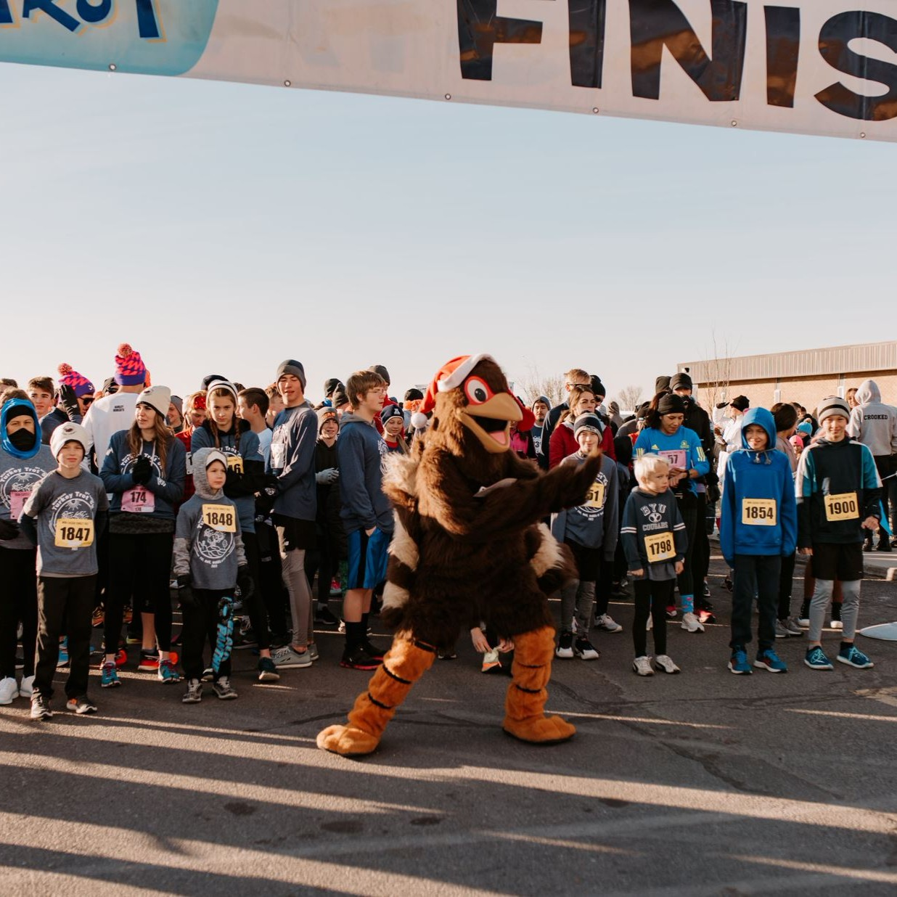
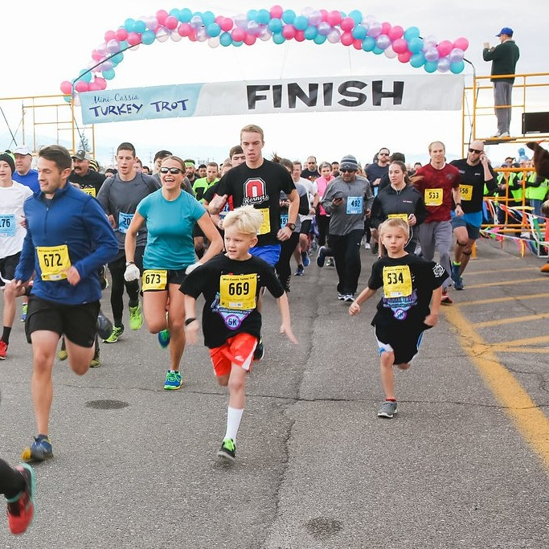
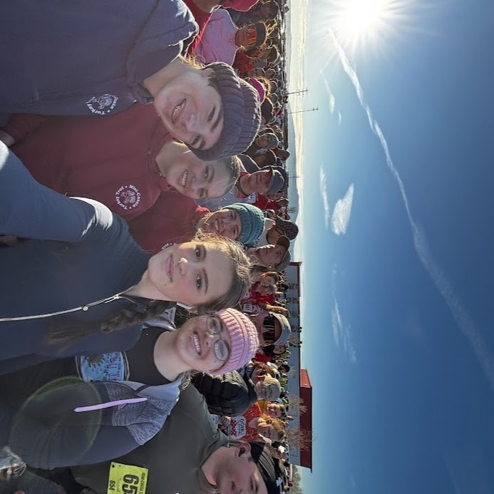

A little trot.
A lot to be
thankful for.
Start Thanksgiving with your neighbors. Join the 21st Annual Mini-Cassia Turkey Trot, a 5K run and walk for every pace.
November 26, 2026 · 9 AM · Paul, Idaho
Early registration: $20 · Registration handled by RaceEntry.

- THANKSGIVING DAY
- Thursday, Nov. 26
- THE DISTANCE
- 5K run + walk
- THE START
- 9 AM Mountain
- THE PLACE
- West Minico, Paul
A good morning
starts with a plan.
Meet us at West Minico Middle School, 155 S 600 W in Paul. The race starts and finishes on the school track.
- Check in at the gymPick up your packet before the start.
- Run, walk, and enjoyA flat 5K through the neighborhood.
- Celebrate at the awardsAwards timing may vary.


More than a race.
A reason to gather.
The costumes. The familiar faces. The cheers that carry you around the last turn. This is a Thanksgiving tradition made by the people who show up.
1,272 participants in 2025.
Thank you for making last year's race a record-breaker.
Save your spot
at the starting line.
5K entry, timing, finish-line treats, and a commemorative shirt while supplies last.
Your 2026 entry
Complete one registration per participant.
Published entry fees shown. Review final charges and availability with the registration provider.
A few things
before you trot.
Come for your fastest 5K or a morning walk. There's room for both.
All race questions ↗Can I walk instead of run?
Absolutely. Runners and walkers of all ages and abilities are welcome. Walkers should start toward the back so faster participants can move safely.
Can children participate?
Yes. Register each child individually. Check the current registration information for age categories, fees, and shirt options.
Where should I park?
Use the West Minico school parking lots via the main entrance off 600 W. Accessible parking is directly south of the gym; please display your placard.
Can I bring a stroller or a dog?
The current 2026 information does not confirm these policies. Ask the organizers before race day.
See you Thanksgiving morning.
Bring your people. Find your pace. Make a memory.